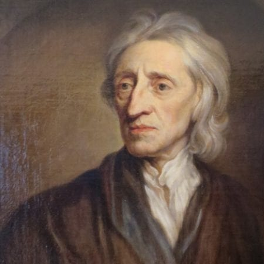

John Locke foi um filósofo inglês conhecido como o "pai do liberalismo", sendo considerado o principal representante do empirismo britânico e um dos principais teóricos do contrato social.
John Locke nasceu em Wrington, Somerset, Inglaterra, no dia 29 de agosto de 1632.
Era filho de um pequeno proprietário de terras, que serviu como capitão de cavalaria.
Estudou Filosofia, Medicina e Ciência Naturais na Universidade de Oxford, onde depois lecionou filosofia, retórica e grego.
Estudou as obras de Francis Bacon e René Descartes.
Em 1683, Locke muda-se para a Holanda, e só retorna à Inglaterra em 1688.
após o restabelecimento do protestantismo e a subida ao trono de Guilherme, Príncipe de Orange
John Locke nasceu em Wrington, Somerset, Inglaterra, no dia 29 de agosto de 1632.
Era filho de um pequeno proprietário de terras, que serviu como capitão de cavalaria.
Estudou Filosofia, Medicina e Ciência Naturais na Universidade de Oxford, onde depois lecionou filosofia, retórica e grego.
Estudou as obras de Francis Bacon e René Descartes.
Em 1683, Locke muda-se para a Holanda, e só retorna à Inglaterra em 1688.
Após o restabelecimento do protestantismo e a subida ao trono de Guilherme, Príncipe de Orange